Introducción
Planta de Hidroalquilacion de Tolueno/Gemelos Digitales Monitor8_V0.pptx
Plantas desarrolladas
||Planta||Nombre||Estado Actual||Mejoras previstas | | Planta de Hidroalquilacion de Tolueno | hda_1 | Operativa |
Plantas en desarrollo
||Planta||Nombre||Estado Actual||Fecha estimada | |Planta de Tratamiento AARR|ptar_1|En desarrollo|Julio 2023 | |Planta de Fabricación de Cerveza|ptar_1|En desarrollo|Julio 2023 | |Planta de Fabricación de Biodiésel|ptar_1|En desarrollo|Julio 2023 |
Organización de las prácticas
Acceso a Monitor8
Cada grupo tiene acceso a una planta de manera exclusiva, el nombre de la página web de acceso se construye de la siguiente manera:
xxxx.servehttp.com:8080/yyyy
donde xxxx es el nombre del servidor e yyyy es el nombre de la Planta
por ejemplo:
http://hda.servehttp.com:8080/hda_1
Navegación y Roles
Existen, entre otros, los nombres de usuario y Rol siguientes: ||Nombre||Rol||Información a la que accede | |CAMPO|Operador de Campo|Instrumentación remota | |PANEL|Operador de DCS o Panel|Instrumentos y actuadores locales | |PLANIFICADOR|Jefe de Planificación y Logística|gestión administrativa de Terminales | |DIRECCION|Director|A toda la información excepto la exclusiva del TRAINER | |INGENIERIA|Ingeniería|A toda la información excepto la exclusiva del TRAINER | |TRAINER|Profesor|A toda la información de la planta |
A cada usuario se le asigna una contraseña de acuerdo a su Rol
Accedemos a cada perfil y observamos la información que hay disponible
Por ejemplo, en el perfil de operador de panel tenemos:
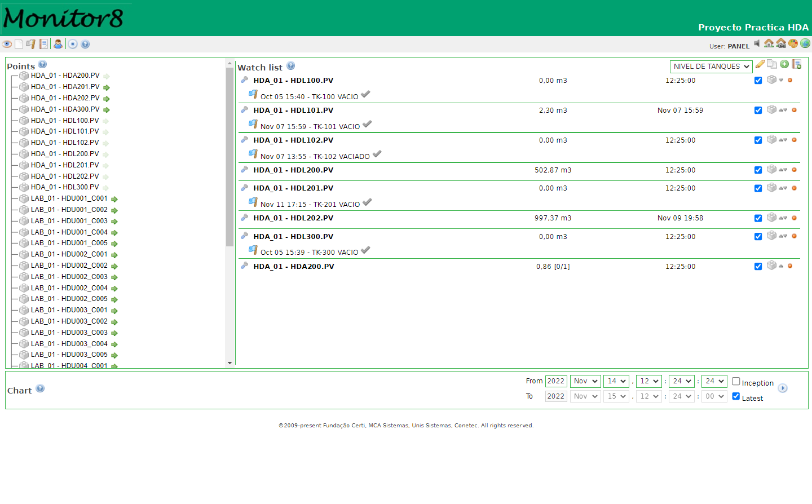
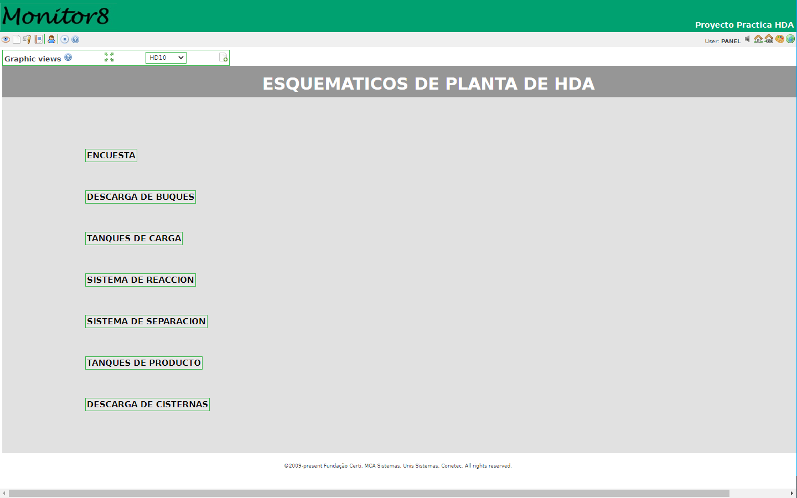
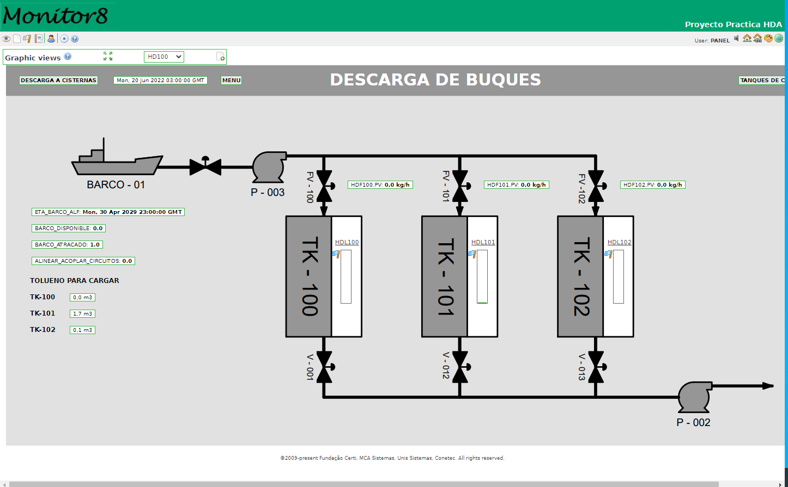
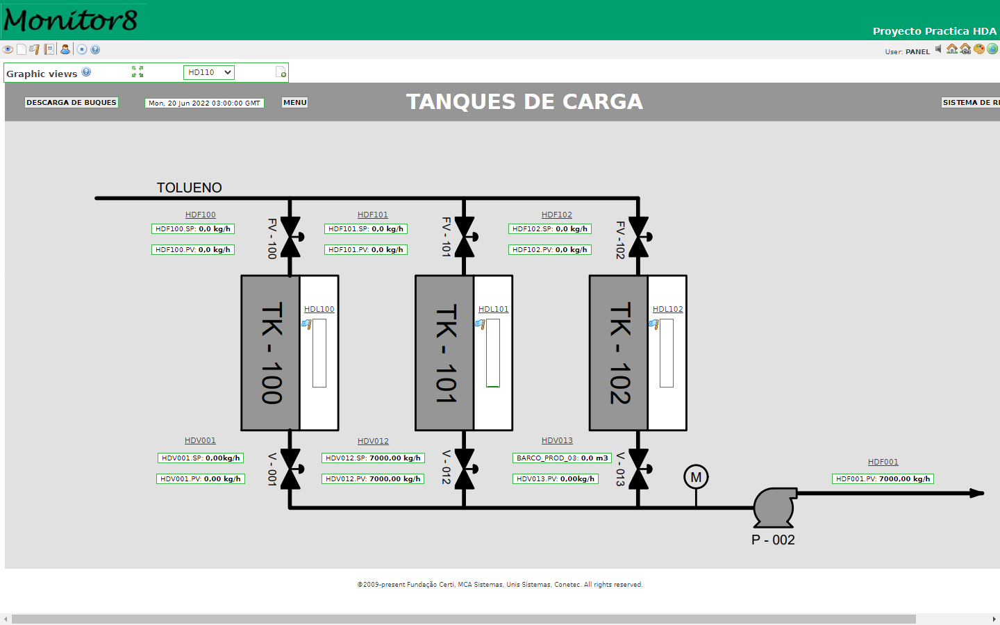
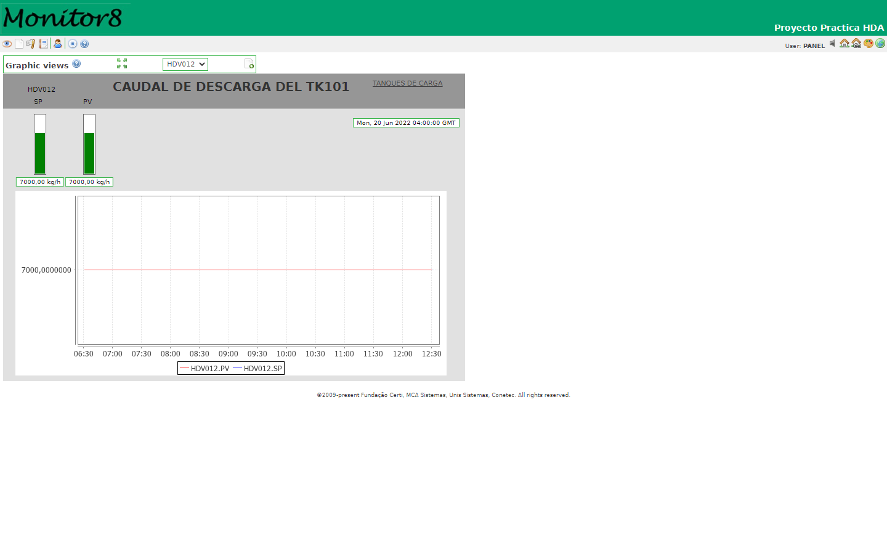
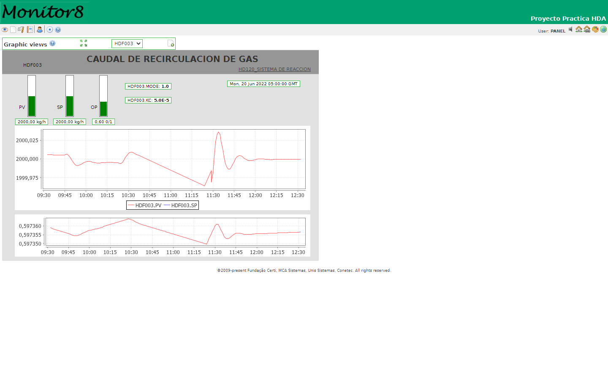
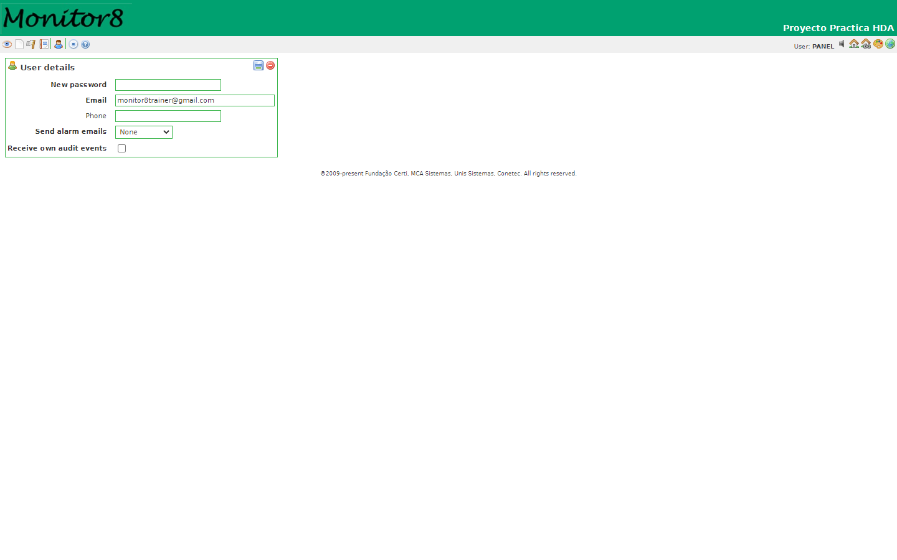
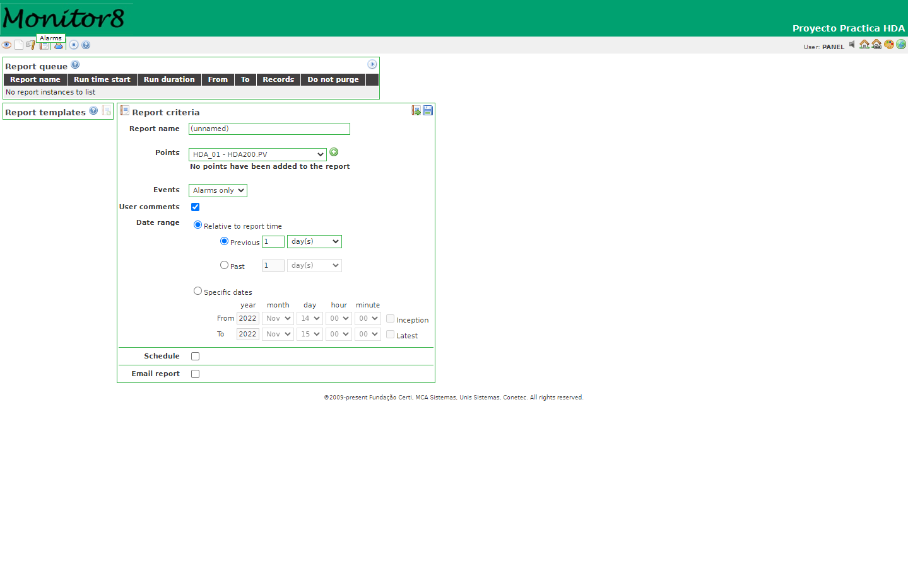
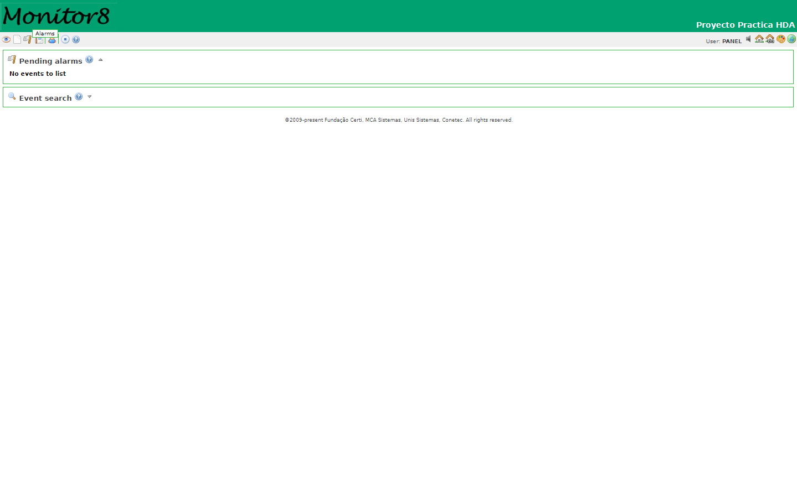
Acceso a informacion de Monitor8 por medio de Telegram
Es necesario tener una cuenta de usuario de Telegram e iniciar un chat con Monitor8Trainer por lo que buscamos ese usuario en Telegram con @Monitor8Trainer.
Este es un Bot que nos permite acceder a la información de la planta y los tags que se especifiquen. Lo primero que hay que hacer es arrancar el chat con Telegram para que nos tenga identificados escribiendo /start a lo que nos contestará con el siguiente mensaje:
Tambien podemos preguntar por /quieneres a lo que nos contestará con:
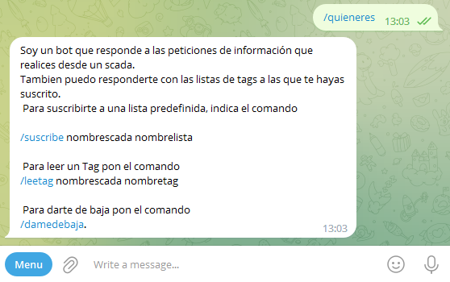
Por último, se puede preguntar por la información deseada, como por ejemplo /leetag hda_1 HDF003.PV HDA001 que indica que necesitamos información de la Planta hda_1 y queremos el item de instrumentacion PV correspondiendo al Tag HDF003 y todos los items disponibles para el tag HDA001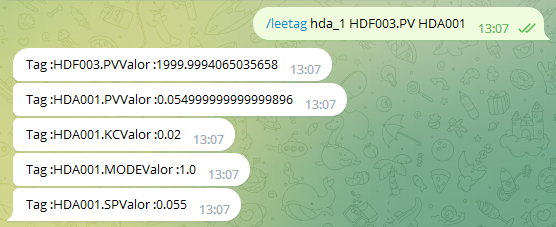
Gestión con el correo electronico
http://hda.servehttp.com:8080/M8TWiki/Wiki.jsp?page=Manual%20Monitor8#section-Manual+Monitor8-RobotDeRespuestaAutom_C3_A1ticasDeCorreoElectr_C3_B3nico
Uso de Meet
http://hda.servehttp.com:8080/M8TWiki/Wiki.jsp?page=Manual%20Monitor8#section-Manual+Monitor8-Videoconferencia